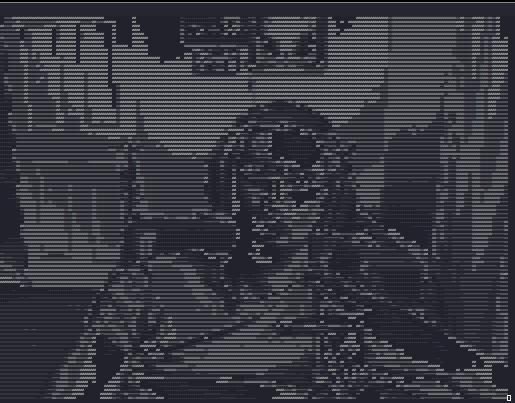

The First Tome, Trolling via Terminal
Spell Class : Red Magic
Spell Level : Introduction
ASCII-WEB
After watching twitch streamer LCOLNQ who used an ASCII rendered webcam. What if we can render video to Terminal for a cyber effect. Below is the python used to render the video output of a webcam in to Grayscale and then turning grayscale brightness into ASCII characters which get rendered with cureses
import cv2
import curses
from curses import wrapper
import math
def main(screen):
scale = 0.2
contrast = 2
screen.clear()
cap = cv2.VideoCapture(0)
if not cap.isOpened():
raise IOError("Cannot open Webcam stream!")
while True:
# Capture from webcam
ret, frame = cap.read()
# Resize Frame
frame = cv2.resize(frame, None, fx=scale, fy=scale, interpolation=cv2.INTER_AREA)
width = len(frame[0])*2
# Convert to Grayscale (0 - 255)
gscale = []
for i, b in enumerate(frame):
for x, a in enumerate(b):
sum = a[0] + a[1] + a[2]
sum /= 3
sum *= contrast
sum = int(sum)
gscale.append(sum)
gscale.append(sum)
# Covert Gray to ASCII
#color = "$@B%8&WM#*oahkbdpqwmZO0QLCJUYXzcvunxrjft/\\|()1{}[]?-_+~<>i!lI;:,\"^`'."[::-1]
#color = "0QLCJUYXzcvunxrjft/\\|()1{}[]?-_+~<>i!lI;:,\"^`'. "[::-1]
color = "@%&$#!;:*\,. "[::-1]
colorArray = list(color)
colorlength = len(colorArray)
interval = colorlength/256
chars = ["@", "%", "&", "$", "#", "*", "&", "~", ":", ".", " "]
chars.reverse()
ascii_px = [chars[pixel//25] for pixel in gscale]
#ascii_px = [colorArray[math.floor(pixel*interval)] for pixel in gscale]
ascii_px = ''.join(ascii_px)
ascii_frame = [ascii_px[index:index+width] for index in range(0, len(ascii_px), width)]
# Display Image in Terminal
for l, x in enumerate(ascii_frame):
try:
screen.addstr(l, 0, x)
except:
pass
screen.refresh()
cap.release()
return
wrapper(main)
Added other character lists that can be used but the one on right now just looks the best.
So the way it stands right now using socat we can pipe the program over TCP for remote playing. IE you can just host your webcam to a target box.
sudo socat TCP4-LISTEN:80 EXEC:"python3.11 ./ascii-web.py"
Clarity of the terminal is based off your host font size. Which is strange.
For the target box we can just use a netcat to grab the output of said
Upgraded socat hosting?
socat -d TCP4-LISTEN:80,reuseaddr,fork EXEC:"python3.11 ./ascii-web.py"
Idea here is to allow the process to get forked. However I am also not sure if that is a good idea. Might allow the computer to be resource attacked by a bunch of connections just ZERG rushing it.
Below is recon for PTS terminal windows
who -a;echo""; ps -aux | grep ".*pts.*"
Here is what the poor blue team would see waving back to them on a Terminal that they cannot clear! The only option is to kill the shell.
